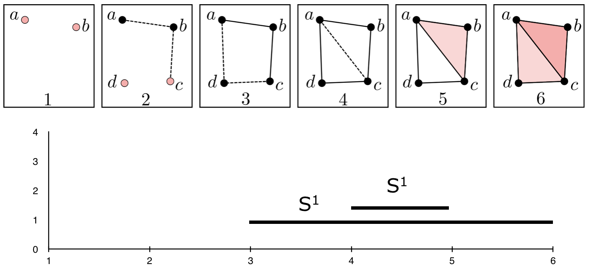

Back to Adam's site

In the last two decades, there has been growing interest in analyzing the "shape" of data. Precisely, any collection of points in space may take on some shape (say, it was noisily sampled from an underlying manifold), and data scientists or others might gain insight into their data set by uncovering this shape. To accomplish this, the tools of topology are apt.
Of course, any point cloud can be considered a topological space with an obvious discrete topology endowed, but this does lend much insight. Instead, one often wants to "thicken" such a space to one with a less trivial topology. It turns out to be difficult to do this in a canonical way, but it is possible if one decides to fix a given scale parameter \(r > 0\). This allows us to construct many different types of thickenings (e.g. Cech Complex, Vietoris-Rips Complex, Alpha Complex, etc.)
In the most general case, we can resolve the issue of not being able to choose a single canonical scale parameter by instead letting the scale parameter take on a range of values and studying the topology of the thickening at every scale. Here we can track which topological features persist and which die during this process. The insight is that if a feature persists for many values of the scale parameter, then that feature must be more essential to topology of the point cloud itself. This theory is known as persistent homology, and forms the basis for topological data analysis,
|  |
The persistence of each shape in a space \(X\) is usually described by the persistence barcodes of \(X\), denoted \(PH(X)\). Essentially, the barcodes track the lifetime of each topological feature, so one can see which features were the most important to the point cloud itself.